계획한 나와 실제의 나를 비교하는 개인 기록기. 원본 요구사항은 ASSINGMENT.md, 작업 이력은 PROGRESS.md, 5일 실사용 로그는 card5-log.md에 있다. 아래 스크린샷은 "합성 기록 3건 채우기" 또는 직접 입력한 합성(가상) 데이터로 재현했다. 실제 개인 기록(PC 전용)은 포함하지 않는다.
카드1을 마친 날부터 서로 다른 실제 날짜 5일(8/27~8/31)간 사용한 화면이다. 기록 8건 + 반복 체크리스트 2건이 남아 있고, 모두 test 태그를 붙인 가상 기록("테스트 1", "게임", "독서", "강의" 등)이다. 8/28에 일부러 심어둔 "초록색" 기록(항목명·표시 색상 불일치)은 5일째에 실제 색상을 초록으로 맞춰 수정한 뒤의 상태다.
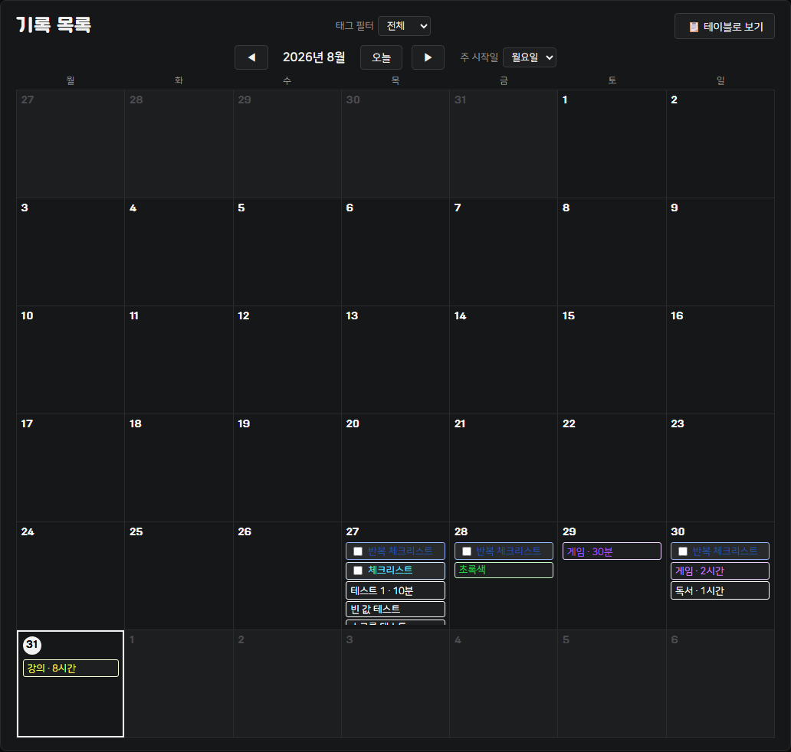
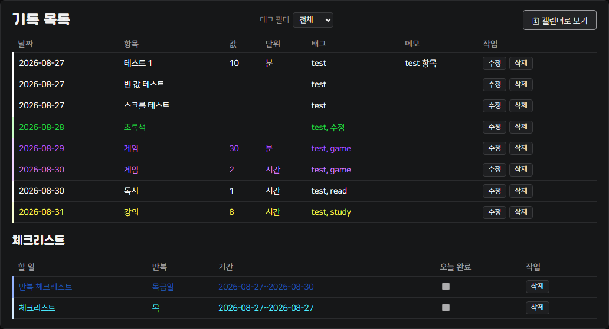
https://whiteclover0542.github.io/plan_record/
어디로 가나요
https://whiteclover0542.github.io/plan_record/
무엇을 하나요 (3단계)
무엇이 보이면 통과인가요
안 될 때
"합성 기록 3건 채우기"로 3건을 추가하고, 한 건을 수정, 한 건을 삭제했다. 목록(캘린더)이 매 동작마다 바로 갱신된다.
추가
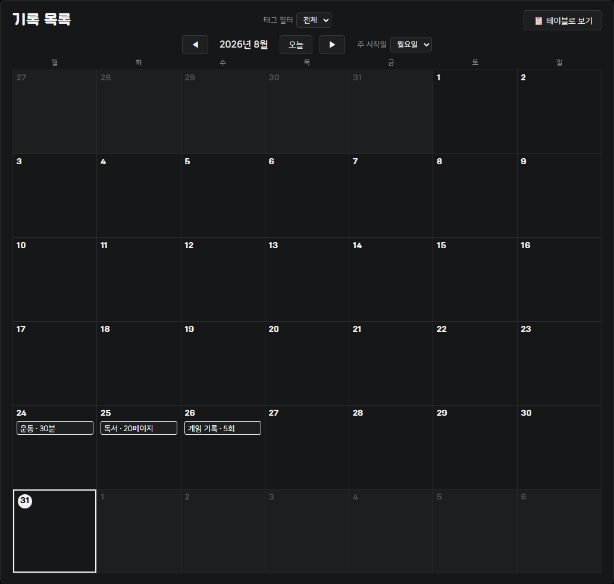
수정 (운동 기록의 값을 999·메모를 "수정 테스트"로 변경)
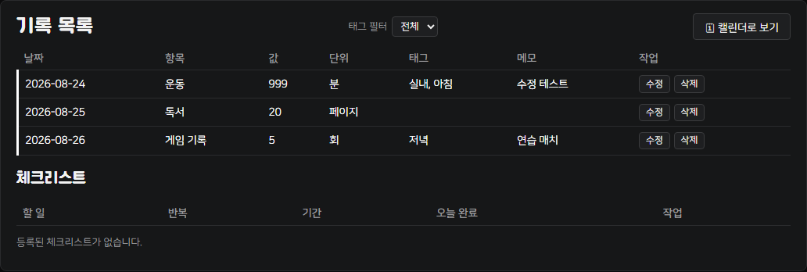
삭제 (독서 기록 삭제, 2건만 남음)
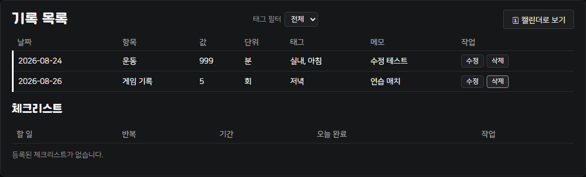
새로고침 후에도 기록이 그대로 유지되고, 손상된 파일을 가져오면 기존 기록을 바꾸지 않은 채 오류 문구만 보인다.
새로고침 전·후 동일 (2건 → 새로고침 → 2건)
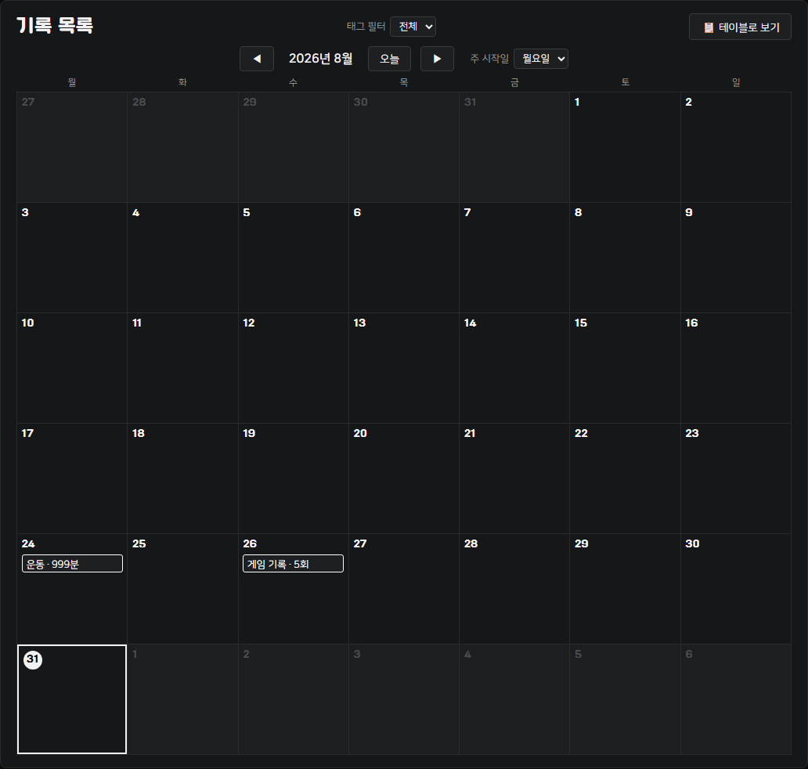
손상 파일 가져오기 거부 (JSON이 아닌 파일 업로드 시 기존 기록 유지 + 오류 문구)
fixtures/v1-sample.json (schemaVersion 없는 v1 형식 3건)을 가져오기하면 id·날짜·값·단위는 그대로 유지된 채 자동으로 v2로 변환된다.
v1 파일 가져오기 결과
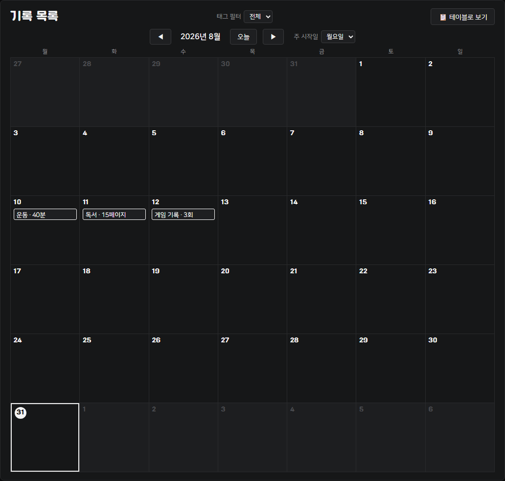
변환 상태 안내 문구
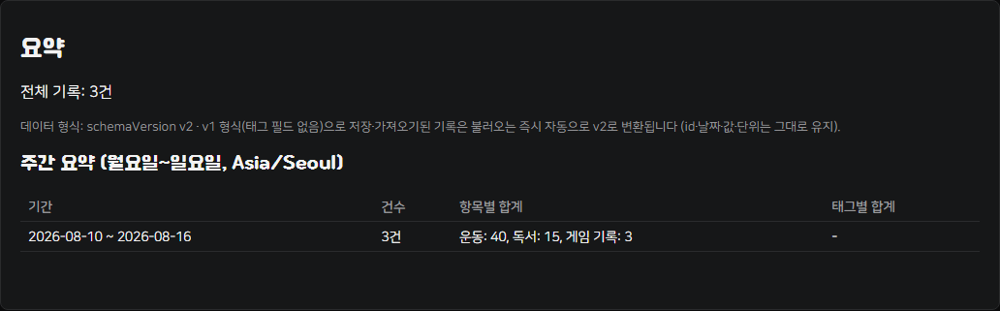
저장소에 아래 6건을 직접 주입해(UI 정상 경로로는 애초에 저장되지 않는 값들) 방어 로직을 검증했다.
| 항목 | 값 | 처리 |
|---|---|---|
| 월요일 경계 (2026-08-24) | 운동 30분 | 집계 포함 |
| 일요일 경계 (2026-08-30) | 운동 20분 | 집계 포함 |
| 필수값 누락 | item 빈 문자열 | 제외(사유 표시) |
| id 중복 | 동일 id 재사용 | 제외(사유 표시) |
| 잘못된 날짜 | 2026-02-30 (실존하지 않음) | 제외(사유 표시) |
| 비숫자 값 | "abc" | 제외(사유 표시) |
결과: 유효한 2건만 "운동: 50"으로 정상 집계, 나머지 4건은 사유와 함께 집계에서 제외됨(오염 없음)
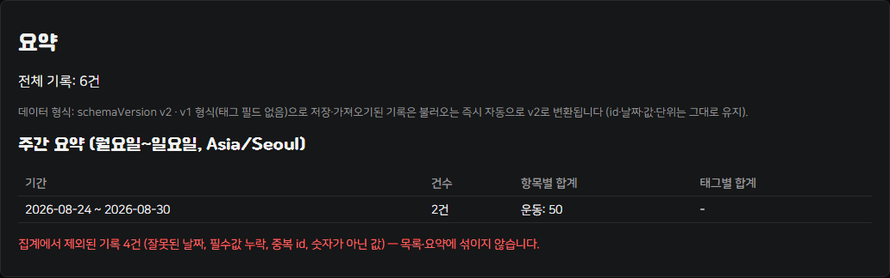
요약 (전체 8건, 주간 요약에 항목별·태그별 합계)
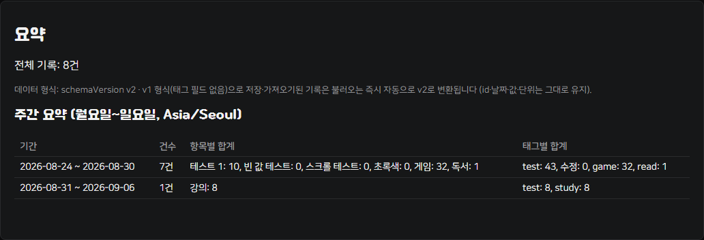
아래는 "잘못 입력한 값을 고치면 행 + 주간 요약이 함께 바뀐다"는 카드5 통과 기준을, 값이 바뀌는 경우로 한 번 더 재현한 것이다 — "운동 30분"으로 잘못 입력했던 기록을 "운동 50분"으로 고치면서 동시에 "중요 표시"도 켰다.
수정 전 — 목록과 주간 요약(운동: 30)
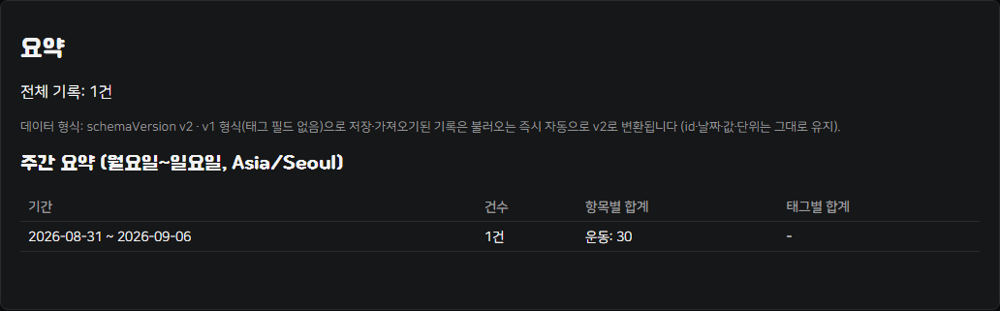
수정 후 — 값이 50으로 바뀌고 ★로 중요 표시됨, 주간 요약도 운동: 50으로 함께 갱신
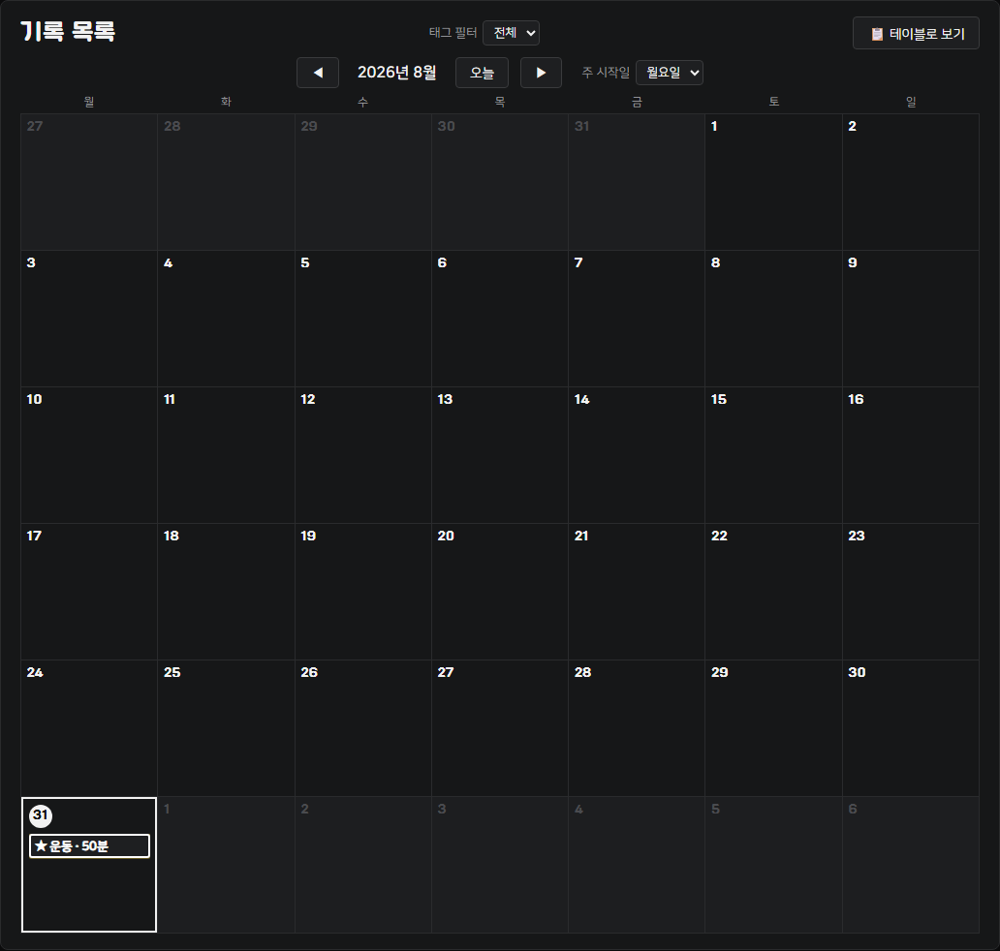